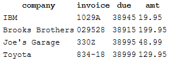
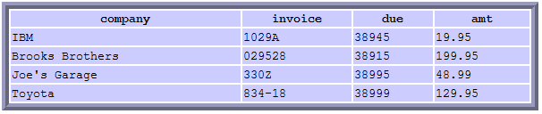

The SQLite Database
Creating a database inside of Run BASIC
Executing queries
Retrieving information using SELECT
Displaying results using RENDER
Decorating the rendered output
Important practices
SQLITE methods
QueryResultRow object
Special Variables
XML Structure of Rendered SQL Results
This is not an SQL tutorial but it is intended to explain how to use the features of SQLite with Run BASIC. If you are already familiar with SQL this section will get you up to speed.
SQLite is a very popular database system used in many commercial and open source projects. It is small, fast and implements most of the SQL-92 standard. We have included a copy of SQLite v3.4.0 with Run BASIC ready to use.
You can visit the SQLite website for lots more information than we will present here.
Creating a database inside of Run BASIC
SQLite databases are kept in simple flat files. If your database name is Customers, then the file is Customers.db. To create a new database named Records with a single table named Payables, the code looks like this:
sqliteconnect #records,
"Records.db"
query$ = "create table Payables (company char(50), invoice char(12), due integer,
amt char(10))"
#records execute(query$)
#records disconnect()
The SQLITECONNECT statement creates a new database or opens an existing database. It returns a database accessor object and assigns it to the variable #records. The simple act of connecting to a database that doesn't exist causes it to be created.
If you need to test if a database exists you can use the FILES statement like so:
files #accessor,
"Records.db"
exists = #accessor hasAnswer()
if exists then print "the database file exists"
Run BASIC provides an EXECUTE method for executing queries to SQLite. This is the method we used to create the table in the example above.
Here is an example that adds a row of data using the EXECUTE method to submit an INSERT query:
sqliteconnect #records,
"Records.db"
query$ = "insert into Payables (company, invoice, due, amt) values
(""IBM"", ""1029A"", 38945, ""19.95"")"
#records execute(query$)
#records disconnect()
SQLite does not have a Date type, so instead we give it a number. You can use Run BASIC's date$() function to convert date information from string to numeric values. For example:
d$ = date$(38945)
print d$
d = date$(d$)
print d
Notice also the doubling up of quotation marks in the query string. Run BASIC allows you to embed quotation marks into a string in this way. For example:
print "She said I was ""funny"" looking. :-("
Retrieving information using SELECT
Use the SELECT statement to get information out of a database.
sqliteconnect #records,
"Records.db"
query$ = "select * from Payables"
#records execute(query$)
if #records hasanswer() then
for x = 1 to #records rowcount()
print #records nextrow$(",")
next x
end if
#records disconnect()
After we execute the SELECT statement, we use the HASANSWER method to check for returned rows of data. Then we use the ROWCOUNT method in a FOR/NEXT loop to get each row with the NEXTROW$ method. The result looks something like this:
IBM,1029A,38945,19.95
Brooks Brothers,029528,38915,199.95
Joe's Garage,330Z,38995,48.99
Toyota,834-18,38999,129.95
Note that once you disconnect from the database the #records object is nulled out so you need to get your information out before you disconnect.
Displaying results using RENDER
You can also display results using the RENDER statement. This creates a formatted result from your SQL query. Look at this example. If you only need to display the results of your query, this can be a very convenient way to do this:
sqliteconnect #records,
"Records.db"
query$ = "select * from Payables"
#records execute(query$)
render #records
#records disconnect()
Here's what the resulting output looks like:

The output is generated by wrapping the database results in HTML tags for displaying a table.
Decorating the rendered output
The database accessor object has a bunch of method for adjusting its visual appearance when it is rendered. Here is a quick example:
sqliteconnect #records,
"Records.db"
query$ = "select * from Payables"
#records execute(query$)
cssclass "table", "{ width: 600px; border: 8px ridge #CCF ;
border-spacing: 3px }"
cssclass "tr", "{ background: #CCF }"
render #records
#records disconnect()
Here's what the output looks:

The two CSSCLASS statements provide CSS rules attached to the <table> and <tr> tags.
Opening and closing database connections - In web programming it is important not to leave things like databases open because if the user closes the browser the server cannot know that this has happened. So, when programming using SQLite always open the database, do your work and close the database right away.
Guarding against SQL Injection - If you decide to publish your web applications to the Internet you need to be aware of a technique used by hackers call SQL Injection. How this can affect the security of your site is important. If you are hosting your Run BASIC web application on a private network and have trusted users you may not need to be concerned about your site being hacked.
Here is a helpful overview of SQL Injection as published on Wikipedia: http://en.wikipedia.org/wiki/Sql_injection
Here is a complete list of the methods that the SQLite database accessor provides:
#handle EXECUTE(expr$) - Execute the SQL query in expr$
#handle DISCONNECT() - Disconnect from the database
#handle HASANSWER() - Return true (nonzero) if there are result rows to read
from the last query
#handle NEXTROW$(delimiter$) - Return the next row as a string using delimiter$
to separate each item
#handle ROWCOUNT() - Return the number of unread result rows from the last query
#handle COLUMNNAMES$() - Return a string containing the comma delimited column
names from the last query
#handle DEBUG$() - Return a string containing ""
#handle ISNULL() - Return zero (false) because the database accessor is not
null.
#handle #NEXTROW() - Return a QueryResultRow object which will let you refer to
specific column values by name.
The following methods are for rendering the result of a query to a web page
as a TABLE
#handle COLUMNNAMES(expr$) - Set the column names using a comma delimited string
expression
#handle CAPTION(expr$) - Set the caption using expr$
#handle CSSCLASS(expr$) - Set the CSS class tag to expr$
#handle TRCLASS(expr$) - Set the CSS class tag for table rows to expr$
#handle TDCLASS(expr$) - Set the CSS class tag for data items to expr$
#handle THCLASS(expr$) - Set the CSS class tag for header row items to expr$
#handle CAPTIONCLASS(expr$) - Set the CSS class tag for the caption to expr$
#handle ALLCLASS(expr$) - Set the CSS class tag for all of the properties to
expr$
#handle LINK(columnNameExpr$, "handler") - Make the items in a column into links
using handler (either a sub or a branch label) when the user clicks
Using the #NEXTROW() method you can get an object which is good for getting individually named column values from a result row. For example:
#myDb execute("select * from myTable")
#row = #myDb #nextrow()
print #row name$()
print #row age()
When using a QueryResultRow object Run BASIC will translate NULL values into 0 when asked for a numeric value, and into an empty string when asked for a string. You can change the default values to something else if you like by changing the contents of the NullColumn$ and NullColumn variables, which are globally visible.
XML Structure of Rendered SQL Results
Here is an example of XML generated for render SQL results. Note that this is essentially the same as XML generated for table objects. Some values have been simplified and link related javascript is removed for clarity. This information is useful for CSS work, and also for XML parsing purposes.
<table>
<caption >Coffee menu</caption>
<tr>
<th>Drink type</th><th>Description</th>
</tr>
<span class="row-odd">
<tr>
<td><a href="?_s=sval1_k=kval2">Regular</a></td>
<td>Classic drip</td>
</tr>
</span>
<tr>
<td><a href="?_s=sval3_k=kval4">Latte</a></td>
<td>Coffee and frothy milk</td>
</tr>
<span class="row-odd">
<tr>
<td><a href="?_s=sval5_k=kval6">Espresso</a></td>
<td>Concentrated coffee goodness</td>
</tr>
</span>
</table>